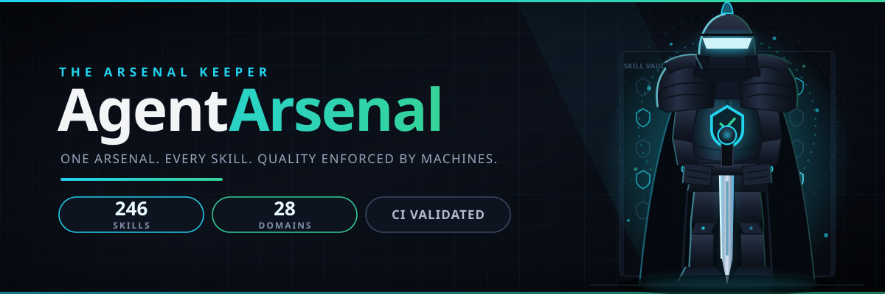
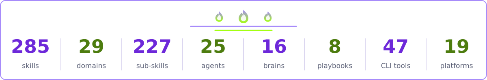

Every skill versioned, freshness-dated, and graded 0 to 100 by machines, not vibes. A 14-check CI harness keeps the bar high. One manifest drives the installer, the docs, and the Claude Code marketplace.


Not a folder of prompts. An engineered system where every artifact is versioned, tested, scored, and connected.
Semver plus a changelog entry on every skill. Pin web-sqli@1.0.0 and know exactly what you installed.
scripts/validate.py enforces the frontmatter standard, naming rules, dependency acyclicity, and freshness dates.
scripts/score.py grades every skill 0 to 100 on triggers, commands, edge cases, and references. Merge needs 70+. Repo average: 95.6.
requires, extends, and relates edges, validated and visualized. The installer resolves the full chain.
25 named operators, 16 reusable reasoning patterns, and 8 end-to-end engagement runbooks with phases and stop conditions.
Schema, lifecycle, and hygiene docs plus memory-store, a stdlib-only SQLite CLI agents use to read and write memory.
Portable single-archive bundles for air-gapped use. Every release is a git tag plus a changelog entry.
.claude-plugin/marketplace.json exposes every skill to Claude Code directly.
Browse the full reference: all domains and skills, the dependency graph, and quality scores.
Learning tracks: Beginner · Practitioner · Expert
One SKILL.md standard, 19 platforms. The platform name is the value for install.sh --platform. Full notes per platform: platforms/PLATFORM_SUPPORT.md.
| Platform | Install command | Skills folder |
|---|---|---|
| Claude Code | ./install.sh --platform claude-code --all | ~/.claude/skills/ |
| OpenCode | ./install.sh --platform opencode --all | ~/.config/opencode/skills/ |
| Codex CLI | ./install.sh --platform codex-cli --all | ~/.agents/skills/ |
| Gemini CLI | ./install.sh --platform gemini-cli --all | ~/.gemini/skills/ |
| Cursor | ./install.sh --platform cursor --all | ~/.cursor/skills/ |
| GitHub Copilot | ./install.sh --platform github-copilot --all | ~/.copilot/skills/ |
| Amp | ./install.sh --platform amp --all | ~/.agents/skills/ |
| Goose | ./install.sh --platform goose --all | ~/.agents/skills/ |
| Cline | ./install.sh --platform cline --all | ~/.agents/skills/ |
| Roo Code | ./install.sh --platform roo-code --all | ~/.agents/skills/ |
| Kilo Code | ./install.sh --platform kilo-code --all | ~/.agents/skills/ |
| Zed | ./install.sh --platform zed --all | ~/.agents/skills/ |
| Warp | ./install.sh --platform warp --all | ~/.agents/skills/ |
| Windsurf | ./install.sh --platform windsurf --all | ~/.agents/skills/ |
| Kiro | ./install.sh --platform kiro --all | ~/.kiro/skills/ |
| Qwen Code | ./install.sh --platform qwen-code --all | ~/.qwen/skills/ |
| Crush | ./install.sh --platform crush --all | ~/.agents/skills/ |
| Continue | ./install.sh --platform continue --all | ~/.agents/skills/ |
| Aider | ./install.sh --platform aider (prints a pointer snippet) | no skills support (uses AGENTS.md) |
The sparse installer copies only what you pick, resolves dependencies from the manifest, and backs up your target first. Add --dry-run to any command to preview.
# clone and preview git clone https://github.com/mizazhaider-ceh/AgentArsenal.git cd AgentArsenal ./install.sh --list # domains with skill counts ./install.sh --dry-run # preview, change nothing # install what you need $ ./install.sh --category web --dry-run $ ./install.sh --category web $ ./install.sh --platform opencode --all $ ./install.sh --version web-sqli@1.0.0 $ ./install.sh --rollback # restore the pre-install backup
Install the arsenal, load a skill, run the engagement. Authorized security work only.